Interpretes
A continuación, hacemos un repaso de quiénes han sido los rostros que se han convertido en el superhéroe con forma de murciélago.
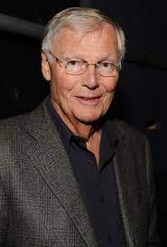
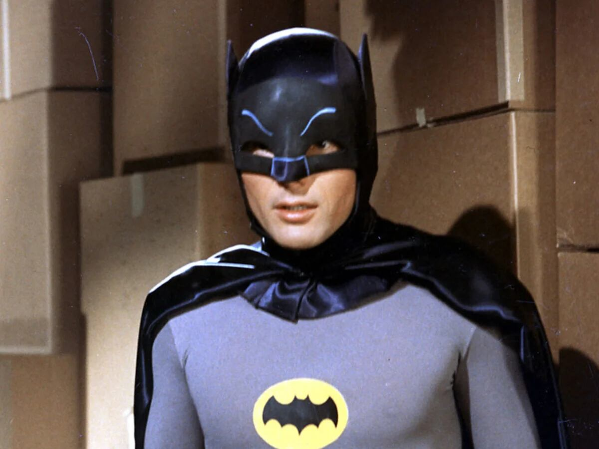
Adam West
Fue quien dio vida a Batman en la serie de televisión ‘Batman & Robin’ que se emitió entre 1966 y 1968. Además, fue quien puso voz al personaje de la serie de dibujos animados del año 1992 y el primero en transformarse en este superhéroe para una película. Todo ello hizo que Adam West haya trascendido y que con el paso de los años su Batman sea todo un icono de la cultura pop a nivel mundial.
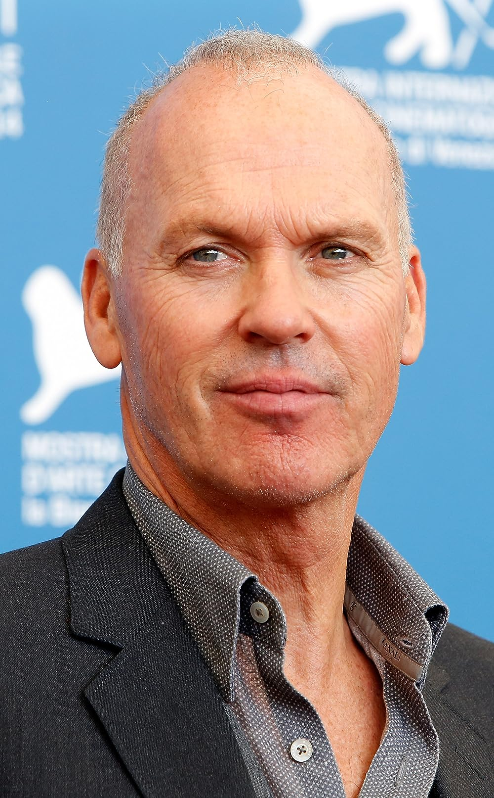
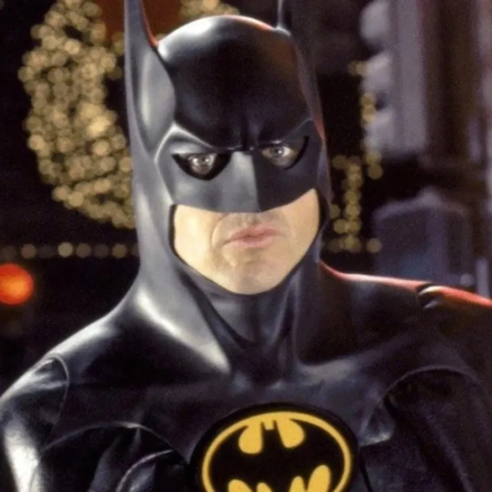
Michael Keaton (1989)
Tim Burton fue el responsable de llevar al cine la historia de este héroe de cómic con Michael Keaton como protagonista. Cabe decir quelos seguidores de este personaje no estaban de acuerdo con la elección del actor e intentaron que la productora del film, Warner Bross, cesase en su cometido. Pero el rodaje siguió adelante y Keaton es uno de los Batmans más recordados, algo a lo que seguro también contribuyó el hecho de que Jack Nicholson se convirtiese en su antagonista: el carismático Joker. Cabe recordar que Michael Keaton volvió a transformarse en este superhéroe tres años después, en la película ‘Batman vuelve’ de 1992.
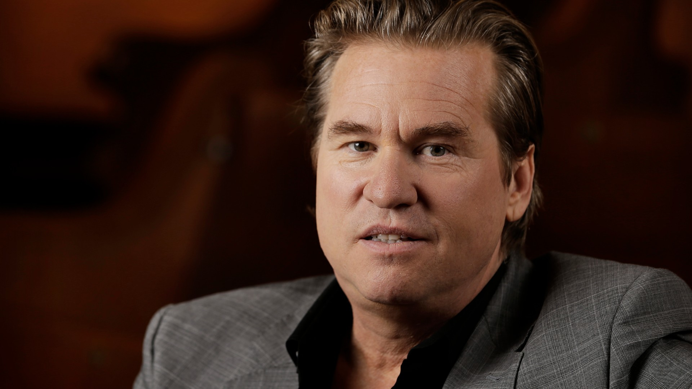
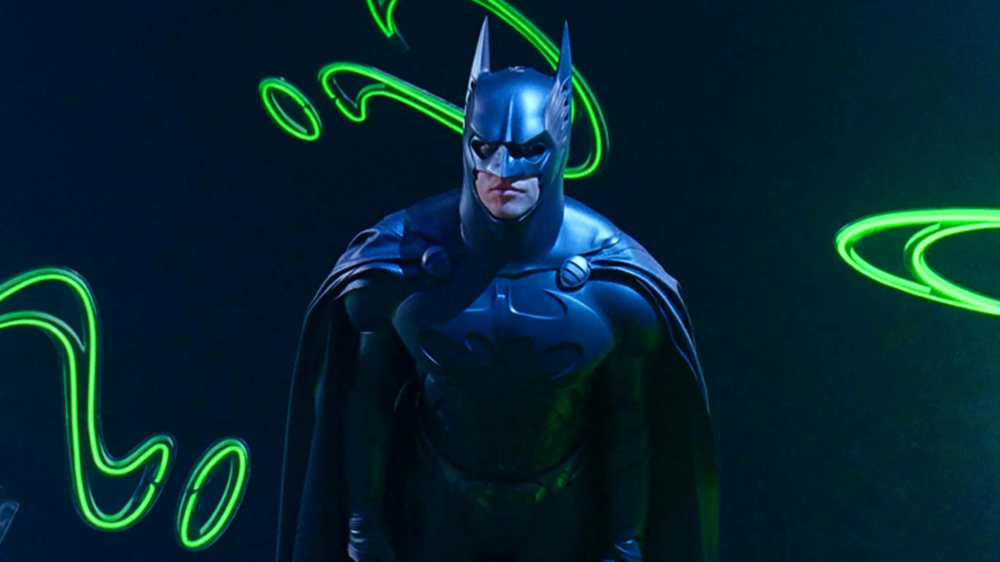
Val Kilmer (1995)
unque Tim Burton se mantuvo en la producción del film, el encargado de dar las órdenes fue Joel Schumacher, algo que no gustó nada a Michael Keaton. El actor renunció a seguir siendo el protagonista y el papel recayó en manos de Val Kilmer El elenco del que se rodeó no fue otro que un jovencísimo Chris O’Donnell como Robin, Jim Carrey como Enigma, Tommy Lee Jones como Dos Caras, Nicole Kidman en el papel de Doctora Chase Meridian y Drew Barrymore, entre otros, como asistente buena de Dos Caras.
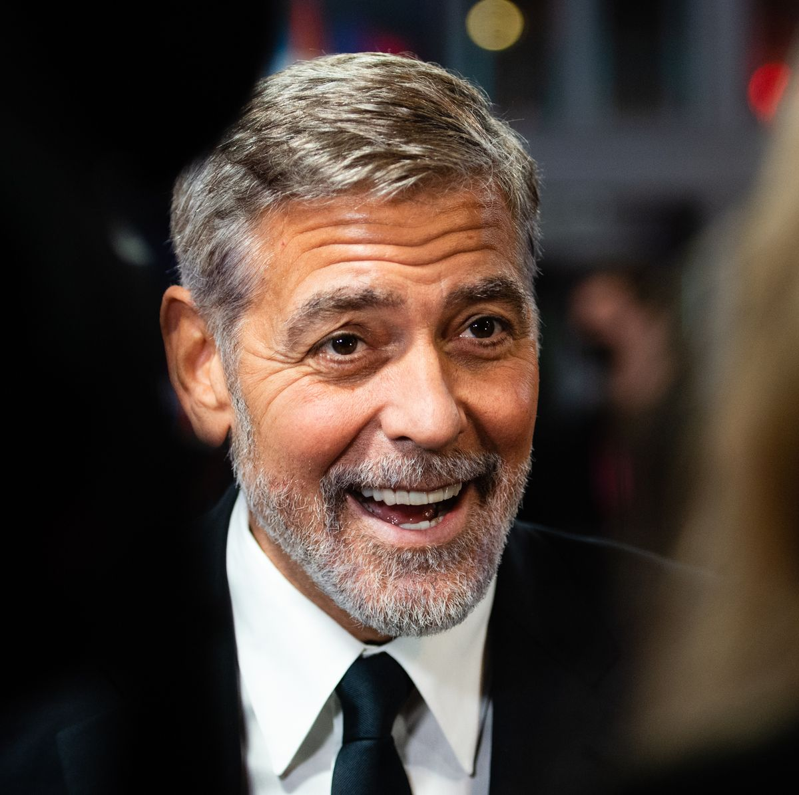
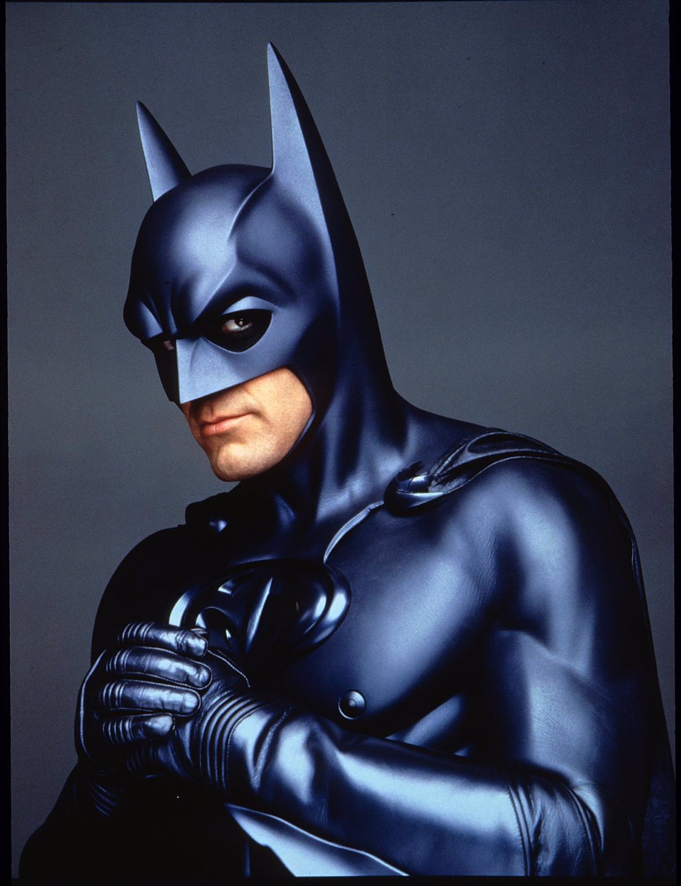
George Clooney (1997)
Un par de años después, el galán por excelencia de finales de los 90, George Clooney, su actuación es de las peor consideradas y ‘Batman y Robin’, que así es como se llamó el film, pasó sin pena ni gloria a pesar de contar con partenaires como Alicia Silverstone, Arnold Schwarzenegger, Uma Thurman y Chris O’Donell como continuación de la parte anterior.

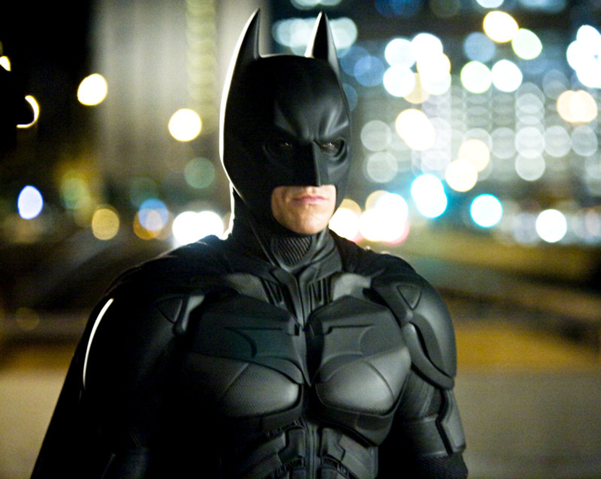
Christian Bale (2005)
Pasó casi una década hasta que alguien se atrevió a volver a llevar a Batman al cine y no fue con una sola película sino con tres. El director de la trilogía no fue otro que Christopher Nolan, quien eligió como protagonista Christian Bale, quien había asombrado al público con su interpretación en ‘American Psycho’ en el año 2000. ‘Batman Begins’, ‘The Dark Knight’, que llegó en 2008, y ‘The Dark Knight Rises’, de 2012, son las tres películas que continuaron retratando al caballero oscuro y donde también pudimos disfrutar de las interpretaciones del fallecido Heath Ledger, Michael Cane, Gary Oldman, Liam Neeson, Morgan Freeman, Tom Hardy, Anne Hathaway o Marion Cotillard, entre muchos otros grandes actores.

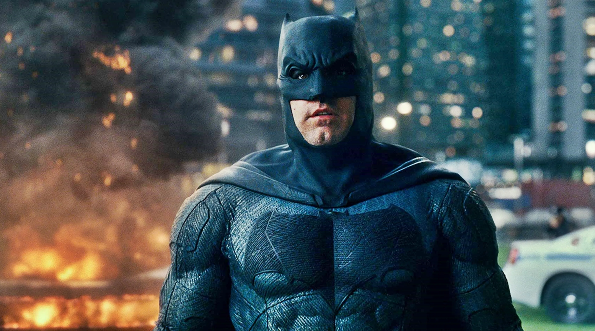
Ben Affleck (2016)
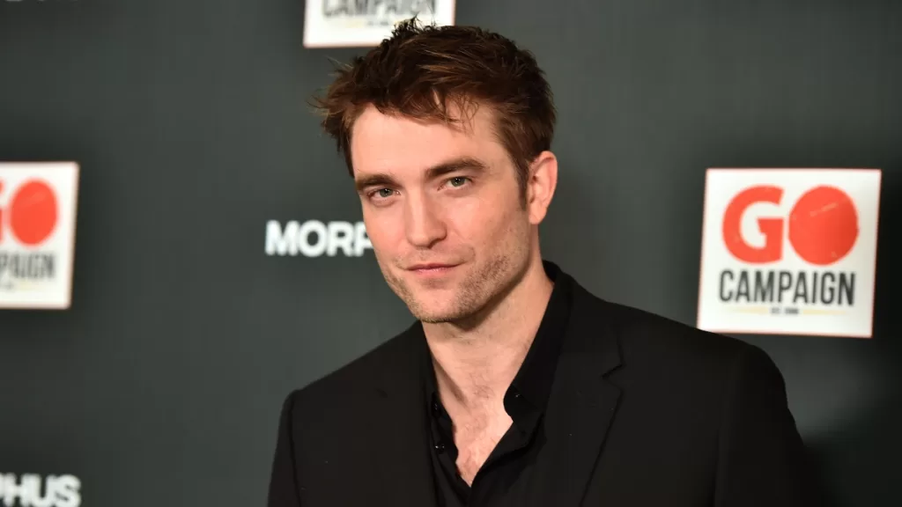

Robert Pattinson (2021)
En un principio, ‘The Batman’ debería haber sido dirigida y protagonizada por Ben Affleck pero el fracaso de su última incursión como caballero oscuro hicieron que el estudio cambiase de opinión y le diesen el proyecto a Matt Reeves, quien eligió a Robert Pattinson para ser el protagonista. El artista, conocido por ser el vampiro de ‘Crepúsculo’, ha trabajado duro para prepararse el personaje, sabiendo que iba a estar bajo el escudriño del público. La intención es que esta sea la primera de una nueva trilogía sobre este superhéroe para el que no pasan los años.